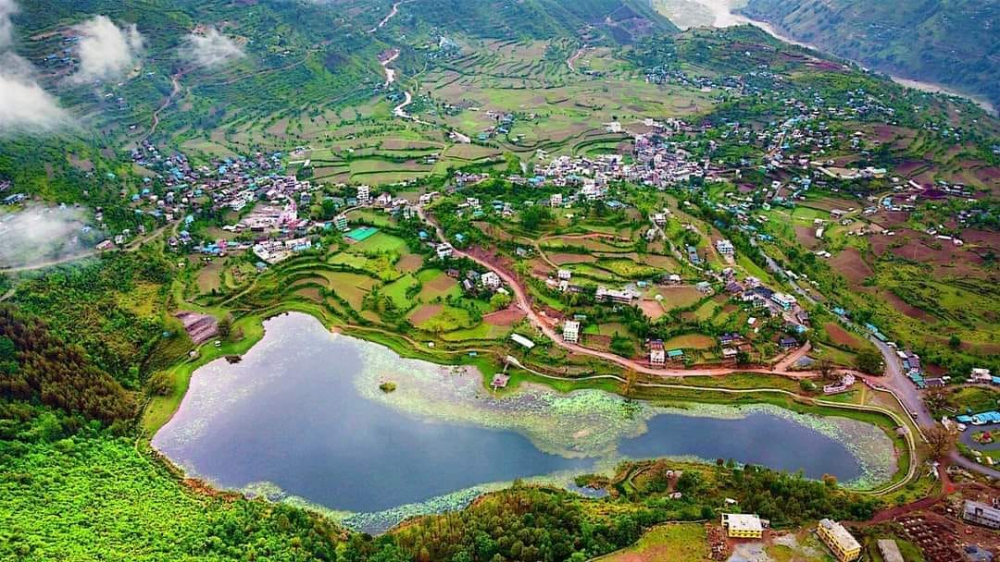

Hello! I'm Utsab Gautam, a passionate student and aspiring electronics engineer from the beautiful village of Rukumkot in the Rukum East district of Nepal. Rukumkot is a serene and historic place surrounded by green hills, ancient temples, peaceful rivers, and natural wonders. It is often called the "Eastern Rukum Valley of Culture and Nature" because of its harmony between spiritual heritage and untouched Himalayan landscapes. With the iconic Shibalaya Temple, Kamal taal , and lush pine forests, Rukumkot is more than just my hometown—it's the foundation of my dreams and values.
As a child, I was always drawn to machines, wires, and devices. Whether it was fixing remote controls, setting up speakers, or playing with old radios, I found joy in exploring the world of electronics. This natural curiosity turned into passion and later inspired me to pursue my education in Electronics, Communication, and Information Engineering at Sagarmatha Engineering College. I believe that even a student from a small village can do big things in life with dedication and innovation.
One of my greatest interests is cricket. I am not just a fan, but a true lover of the sport. I play it with my friends, follow international matches, and even think about how technology can change the game. This love for cricket gave me an idea: why not use electronics and coding to improve cricket scoring, tracking player performance, and even creating smart wearables for players? I’m currently researching how to combine IoT and microcontrollers with cricket analytics to build something that can support grassroots cricket in Nepal.
My other hobbies include listening to music while coding, sketching creative UI designs, and brainstorming project ideas. I’m a night owl who finds inspiration in silence and stars. Late-night coding sessions are my therapy, and GitHub is my diary. I'm also very interested in web development, automation, embedded systems, and how technology can empower rural areas like mine. I recently worked on a project called “LifeBlood,” a digital blood donation system designed to save lives by connecting donors and recipients easily across Nepal.
As a student, I always try to stay updated with modern tools like AI, IoT, Python, JavaScript, and cloud systems. I love solving real-world problems with smart solutions. I believe in open-source contributions and love to share knowledge through collaboration. I'm also exploring technologies like Arduino, ESP32, Node.js, and MongoDB to build more robust and useful tools for education, health, and sports sectors.
Despite being from a remote area, I never see it as a weakness. In fact, it motivates me more. My long-term dream is to become a tech innovator who helps bridge the gap between Nepal’s cities and its villages. I want to make Rukumkot known not just for its beauty, but also for the innovation that begins there.
If you're someone who loves cricket, tech, rural development, or just a good story—let's connect and build something meaningful together. My journey is only beginning, and I’m excited to grow, learn, and create. Thank you for being part of it.
üì∏ Moments from My Life